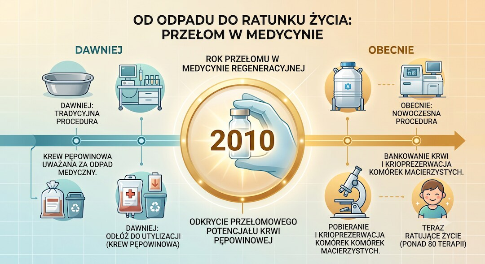
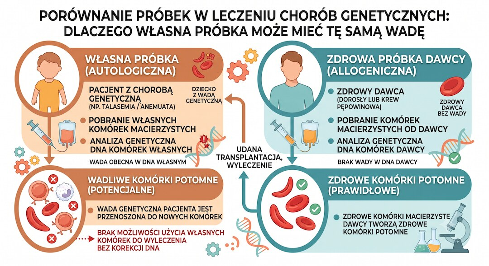
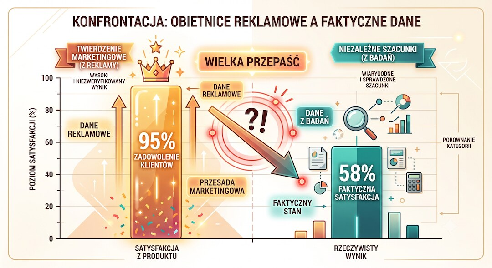

Krew pępowinowa przez większość historii medycyny była traktowana jak odpad — lądowała w szpitalnym koszu razem z łożyskiem. Dziś firmy przechowują ją w ciekłym azocie i sprzedają jako „polisę na życie”. Sprawdziliśmy, co z tego jest nauką, a co sprytnym marketingiem — i kiedy naprawdę warto.
Szybka odpowiedź
Krew pępowinowa naprawdę może ratować życie w wybranych chorobach krwi, odporności i metabolizmu, ale prywatne bankowanie zdrowego dziecka ma niską szansę użycia, bo AAP podaje szacunki od 1:1000 do 1:200000, a własna próbka często nie nadaje się przy chorobie genetycznej lub białaczce, więc decyzję warto omówić z lekarzem.
Kluczowe wnioski
- Krew pępowinowa przez wieki była wyrzucana; pierwszy udany przeszczep wykonano dopiero w 1988 roku.
- Komórki krwiotwórcze realnie leczą nowotwory krwi, wrodzone choroby krwi i ciężkie niedobory odporności.
- Przy chorobach genetycznych i białaczce własna próbka często się nie nadaje — potrzebny jest zdrowy dawca.
- Szansa, że dziecko wykorzysta własną krew, jest niska; reklamowe „1 na 100” miesza różne statystyki.
Dlaczego przez wieki krew pępowinowa lądowała w koszu?
Przez setki lat nikt nie widział w niej wartości. Po przecięciu pępowiny w łożysku i jej fragmencie zostaje jeszcze około pół szklanki krwi. Dla dziecka to już zbędny balast, więc razem z łożyskiem trafiała do utylizacji. Dopiero pod koniec XX wieku okazało się, że ten „odpad” jest pełen komórek macierzystych.
Pierwszy sygnał pojawił się już w 1974 roku, gdy naukowcy opisali obecność komórek krwiotwórczych w ludzkiej krwi pępowinowej. Przez kolejną dekadę badacze, m.in. Hal Broxmeyer, udowadniali, że te komórki działają podobnie do szpiku kostnego. Dzięki temu udało się w końcu zrobić coś, co wcześniej wydawało się poza zasięgiem.

Co się zmieniło w 1988 roku w Paryżu?
Szóstego października 1988 roku w paryskim szpitalu Saint-Louis lekarka Eliane Gluckman przeprowadziła pierwszy na świecie przeszczep krwi pępowinowej. Pacjentem był kilkuletni Matthew Farrow z anemią Fanconiego — chorobą, która wcześniej zwykle kończyła się śmiercią. Dawcą była jego nowo narodzona siostra, zgodna tkankowo i wolna od tej samej mutacji.
Przeszczep się udał. Matthew żyje do dziś — jest mężem i ojcem, kilkadziesiąt lat po zabiegu. To był przełom: udowodniono, że garść komórek z „wyrzucanej” krwi potrafi odbudować cały układ krwiotwórczy. Od tamtego momentu na świecie wykonano już dziesiątki tysięcy takich przeszczepów.

Co naprawdę potrafią leczyć komórki z krwi pępowinowej?
Lista jest konkretna i dobrze udokumentowana. Komórki krwiotwórcze z krwi pępowinowej stosuje się w leczeniu nowotworów krwi, takich jak białaczki i chłoniaki, a także wrodzonych chorób krwi, ciężkich niedoborów odporności i niektórych chorób metabolicznych. Dziś mówi się o ponad osiemdziesięciu jednostkach chorobowych, w których taki przeszczep bywa stosowany.
Trzeba jednak oddzielić dwa światy. Jest medycyna oparta na dowodach — te przeszczepy krwiotwórcze faktycznie ratują życie. I jest medycyna regeneracyjna, czyli obietnice leczenia autyzmu, mózgowego porażenia dziecięcego czy cukrzycy. To wciąż w większości badania kliniczne, a nie standardowe, zatwierdzone terapie; podobne rozróżnienie między obietnicą technologii a wynikiem leczenia opisuję w tekście o AI w medycynie i realnych efektach dla pacjentów.
- Nowotwory krwi: białaczki, chłoniaki, szpiczaki
- Wrodzone choroby krwi: anemia sierpowata, talasemia
- Ciężkie niedobory odporności: np. SCID, zespół Wiskotta-Aldricha
- Wybrane choroby metaboliczne i niewydolność szpiku

Dlaczego własna krew pępowinowa często nie pomoże dziecku?
To najczęściej przemilczany haczyk. Jeśli choroba dziecka ma podłoże genetyczne, jego własna krew pępowinowa nosi dokładnie tę samą wadliwą informację — więc do leczenia się nie nadaje. Podobnie przy białaczce: w pobranej po urodzeniu krwi mogą już być komórki, od których zaczęła się choroba. Wtedy potrzebny jest zdrowy dawca, a nie własny materiał.
Podobną ostrożność przy pojedynczych liczbach opisuje poradnik o markerach krwi i ich ograniczeniach.
Dlatego tak zwane przeszczepy autologiczne — gdzie dziecko jest jednocześnie dawcą i biorcą — są w praktyce rzadkie. Znacznie częściej ratunkiem okazuje się materiał od zgodnego rodzeństwa albo od obcego dawcy z publicznego rejestru. To ważne, bo marketing „polisy dla twojego dziecka” sugeruje coś dokładnie odwrotnego.

Jakie są realne szanse, że kiedykolwiek jej użyjesz?
Tu zaczynają się poważne rozbieżności. Prywatne banki lubią podawać, że komórek użyje „jedna na sto” osób. Niezależne źródła medyczne są dużo ostrożniejsze: szacunki prawdopodobieństwa, że dziecko wykorzysta własną próbkę, wahają się od jednej na kilkaset do jednej na dwieście tysięcy. Różnica jest ogromna i nieprzypadkowa; dlatego przy decyzjach zdrowotnych warto patrzeć na ryzyko tak trzeźwo jak przy planowaniu badań krwi po 50-tce .
Skąd ta przepaść? „Jedna na sto” zwykle dotyczy szansy, że ktokolwiek w rodzinie skorzysta z jakiegokolwiek przeszczepu komórek macierzystych w ciągu życia — niekoniecznie z tej konkretnej, zamrożonej próbki. To zgrabny zabieg, który miesza dwie zupełnie różne liczby.
| Źródło szacunku | Podawana wartość |
|---|---|
| Marketing banków prywatnych | ok. 1 na 100 |
| ACOG (użycie autologiczne) | 1 na 400 – 1 na 2500 |
| AAP (potrzeba własnych komórek) | 1 na 1000 – 1 na 200 000 |

Bank prywatny czy publiczny — co rekomendują lekarze?
Tu duże towarzystwa naukowe mówią jednym głosem. Amerykańska Akademia Pediatrii i towarzystwo ginekologów-położników rekomendują raczej dawstwo do banku publicznego niż płatne przechowywanie dla siebie. Prywatny bank ma sens przede wszystkim wtedy, gdy w rodzinie jest ktoś z chorobą, którą leczy się przeszczepem komórek krwiotwórczych.
Powód jest praktyczny. Krew z banku publicznego trafia do globalnego rejestru i może uratować dowolnego zgodnego pacjenta na świecie — dlatego statystycznie jest wykorzystywana wielokrotnie częściej niż próbki z banków prywatnych. Dawstwo jest bezpłatne i nie boli ani mamy, ani dziecka.
| Cecha | Bank prywatny | Bank publiczny |
|---|---|---|
| Koszt dla rodziny | Płatny: opłata wstępna i roczna | Bezpłatny |
| Dostępność próbki | Tylko dla rodziny | Dla dowolnego zgodnego pacjenta |
| Częstość realnego użycia | Niska | Znacznie wyższa |
Ile to kosztuje i kiedy naprawdę warto?
Porozmawiajmy o pieniądzach, bo to często decyduje. W publicznym cenniku PBKM z datą modyfikacji 30 czerwca 2026 r. przykładowy pakiet obejmujący krew pępowinową, sznur pępowinowy i łożysko ma opłatę 398 zł przy umowie, 10 rat po 931 zł po badaniach oraz abonament 117 zł miesięcznie po roku.
| Moment płatności | Kwota | Co to znaczy dla rodziny |
|---|---|---|
| Po podpisaniu umowy w ciąży | 398 zł | Opłata wstępna za zestaw, pobranie i transport. |
| Po badaniach, ok. 2 miesiące po porodzie | 10 × 931 zł | Razem 9310 zł w aktualnej promocji; cennik pokazuje też cenę przekreśloną 10 × 1164 zł. |
| Rok po porodzie | 117 zł miesięcznie | Abonament za przechowywanie; promocje typu „pierwszy abonament za 2 lata” trzeba sprawdzić w umowie. |
| Suma przed abonamentem | 9708 zł | 398 zł + 10 × 931 zł, jeszcze bez wieloletniego przechowywania. |
| Orientacyjnie przy 20 latach abonamentu | ok. 37 788 zł | 9708 zł + 117 zł × 12 miesięcy × 20 lat, bez uwzględniania promocji i przyszłych zmian cen. |
To nie jest mały „koszt startowy”, tylko decyzja finansowa rozłożona na lata. Dlatego warto porównać ją z realną szansą użycia próbki: jeśli w rodzinie nie ma choroby leczonej przeszczepem komórek krwiotwórczych, publiczne dawstwo pozostaje dla rodziny bezpłatne i częściej pomaga komuś, kto faktycznie potrzebuje zgodnego materiału.
Wniosek jest wyważony, nie czarno-biały. Krew pępowinowa naprawdę bywa skarbem — w udokumentowanych sytuacjach ratuje życie. Ale jako uniwersalna „polisa” dla zdrowego dziecka bywa przepłaconą obietnicą. Jeśli w rodzinie nie ma choroby leczonej takim przeszczepem, rozsądne jest dawstwo publiczne; jeśli interesują Cię inne decyzje profilaktyczne oparte na danych, zobacz też tekst o szczepieniu HPV i realnej ochronie. A samą decyzję warto skonsultować z hematologiem lub genetykiem.

Zobacz też: apob apoa badania cholesterol, apob norma cena jak czytac wynik.
Najczęściej zadawane pytania
Czy krew pępowinowa jest cennym materiałem medycznym?
Tak, ale w konkretnych wskazaniach. Krew pępowinowa jest źródłem krwiotwórczych komórek macierzystych, używanych głównie w wybranych chorobach krwi, szpiku i odporności. Nie jest jednak uniwersalną polisą na nowotwory, cukrzycę, demencję czy każdą przyszłą chorobę dziecka.
Czy dziecko może użyć własnej krwi pępowinowej?
Rzadko i nie w każdej chorobie. Przy wielu chorobach genetycznych własna próbka może zawierać tę samą wadę, a przy białaczkach lekarze często wolą zdrowy materiał od dawcy. Dlatego obietnica „zabezpieczenia dziecka na wszystko” jest zbyt szeroka.
Kiedy prywatne bankowanie ma sens?
Najbardziej wtedy, gdy w rodzinie jest już konkretna choroba leczona przeszczepem komórek krwiotwórczych albo lekarz widzi realne wskazanie dla rodzeństwa. W zdrowej rodzinie, bez obciążonego wywiadu, prywatne przechowywanie ma zwykle znacznie słabsze uzasadnienie medyczne.
Bank prywatny czy publiczny — co wybrać?
Bez obciążającego wywiadu rodzinnego towarzystwa naukowe częściej wskazują dawstwo publiczne, bo taka próbka trafia do rejestru i może pomóc pacjentowi, który jej naprawdę potrzebuje. Bank prywatny daje rodzinie kontrolę, ale koszt nie oznacza automatycznie dużej szansy użycia.
Źródła
- AAP — Cord Blood Banking for Potential Future Transplantation (2017)
- Polityka AAP 2017 (pełny tekst, PMC)
- ACOG — Umbilical Cord Blood Banking (2019)
- Umbilical cord blood transplantation: the first 25 years and beyond (PMC)
- Gluckman E. — History of the clinical use of umbilical cord blood cells (PubMed)
- Cleveland Clinic — Cord Blood Banking
- PBKM — Cennik pobrania i przechowywania komórek macierzystych
Uwaga: Artykuł ma charakter informacyjny i edukacyjny. Nie zastępuje konsultacji lekarskiej, diagnozy ani leczenia.